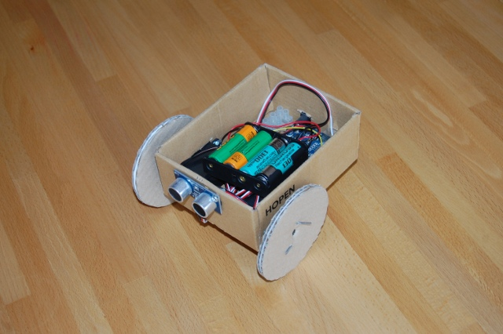

A kiindulás
2009-ben építettem egy kartonpapír szerkezetű, két motorral és egy szonarral felszerelt robotot, ami egy Arduino mikrokontroller segítségével egyszerű akadálykikerülést végzett. A robot elkészítéséről akkor részletesen írtam, az akkori robot végül ilyen lett.
A tapasztalatok alapján úgy döntöttem, hogy a továbblépéshez valamivel komolyabb vázat fogok használni, illetve a robotot is céltudatosabbá teszem, kitalálok egy egyszerű feladatot is neki. Ugyanakkor továbbra is fontos szempont, hogy a robot viszonylag olcsó, egyszerűen összeépíthető legyen.
Ezen az oldalon az új robotot fogom bemutatni. Ezúttal nem térek ki az elkészítés legkisebb részleteire, mint azt a kartonrobotnál tettem, hanem inkább a lényegesebb újdonságokra koncentrálok.
Az elkészült új robot, aktuális jelmezében így néz ki:
A feladat
A robotika blog-hoz anyagot gyűjtve bukkantam az alábbi kis filmre, ami alapján ezt a bejegyzést írtam.
A filmen szereplő robot bögréjét rázva pénzt gyűjt. Én ehhez hasonló mozgó robotot szerettem volna csinálni.
A korábbi kartonrobot két motorra és egy szonárra épülő mozgása megfelelő alap az új robotnak is. Ebből kiindulva azt kellett elérni, hogy a robot ne faltól falig menjen, hanem időnként körülnézzen, irányt váltson és megrázza a bögréjét. Az összetettebb mozgáshoz több motorra és bonyolultabb program van szükség.
A korábbi alkatrészek közül az Arduino Duemilanove, a 2 db Parallax körbeforgó szervomotor, a Parallax Ping ultrahangos szenzor és az elemtartó az új robotban is szerepet kap. A felhasznált alkatrészek listája a következőkkel bővül:
|
1 db Merkur építőkészlet (a képet a retronom.hu-ról vettem) |
2db Parallax
(Futaba) standard, 180 fokot forduló szervomotor
|
|
2 db játékautókerék |
1 db egyszerű, barkácsáruházból beszerezhető görgő kerék |
| 1 db próbapanel | 1 köteg vezeték |
|

Az elkészítéshez és működtetéshez felhasznált eszközök sem változtattak a lényegen: a program feltöltéséhez szükséges USB A-B típusú kábel mellett, az arduino fejlesztői környezettel rendelkező számítógépen, és csavarhúzón kívül mást nem nagyon használtam.
Beszerzés
A felsorolt eszközöket és alkatrészeket némi utánajárással -
illetve házhoz szállításos online rendelés esetén anélkül is - be lehet
szerezni.
A két szervót ismét a Chipcadnél
vásároltam, 3000 Ft + ÁFÁ-ért darabját. A Merkur építőkészlet
legalább 25 éves, megteszi helyette más hasonló is, lényeg, hogy
viszonylag stabil legyen és hozzá lehessen csavarozni a többi, nem a
készlethez tartozó alkatrészt.
A játékautókerék egy újabban kiszuperált
gyerekjátékról került elő, a görgőt az OBI-ban vettem, párszáz
forintért.
A kisméretű, az ételhordóba beférő próbapanelt és egy csomag
vezetéket
a hestore-ban
vettem, együtt még 2000
forintba sem kerültek. Segítségükkel az elektronikát forrasztás nélkül össze
lehetett állítani. A csatlakozóval ellátott vezetékek azért is hasznosak, mert az Arduino-n
és a próbapanelen meglévő tüskékbe könnyen beilleszkednek, és utána
biztosan benne is maradnak. Az egyszerű rézvezetékről egyik sem
mondható el, a korábbi szerelés és programozás során ez elég sok
fejfájást okozott.
A váz építése
A váz elkészítése az én Merkur készletem legnagyobb felületű két elemének egymáshoz
rögzítésével kezdődik. Erre van rácsavarozva a műanyag doboz,
melyben az Arduino, a próbapanel, az elemtartó és a vezetékek nagy
része helyezkedik el. A műanyag doboz segítségével elérhető, hogy az
Arduino fém részei ne érjenek össze a szerkezet többi részével, mert
az rövidzárlatot okoz.
A további alkatrészeket különböző
hosszúságú, vékony egyenes elemekkel rögzítettem az alaphoz.
Alulról a két körbeforgó szervót, azokra a játékautó-kereket, hátul egy kis felfüggesztéssel a
görgőt. A kerekek rögzítéséhez a szervó szarvakat és a kerék belső
oldalát is óvatosan át kellett fúrni. Ez így sokkal megbízhatóbb
összekötést nyújt a korábbi kartonkerékhez képest.
Fölfelé terjeszkedve a leghosszabb elemek felhasználásával sikerült viszonylag
magas robotot összehozni. Ezekre a hosszú elemekre került elölről a
szonár, fölé a bögrét mozgató standard szervó, hozzárögzítve a
fémbögre. Felülről egy nagy felületű elem zárja le vízszintesen a törzset,
amihez a negyedik, fejet forgató standard szervó rögzül.
 | |
A váz összeállítása jó néhány óráig eltartott és az itteni leírással szemben nem volt mindig előre haladó, többször vissza kellett bontani egyes részeket, sőt új alkatrészt kellett találni/venni, amikor egy megoldás nem vált be. Például a görgő a harmadik változat a hátsó támasztás biztosítására.
A végeredménynél szempont volt, hogy a mikrokontrollerhez könnyen lehessen csatlakozni és az elemeket bármikor ki lehessen cserélni.
A jelmezzel kapcsolatban csupán arra kellett figyelni, hogy a forgó alkatrészek ne csíphessék be, valamint hogy a szonár ne kerüljön a ruha takarásába, mert különben mindig közeli akadályt jelez.
Elektronika
Az elektronika kialakítása a korábbi cikkhez képest jórészt
annyiban változik, hogy két új motort kell tudni kezelni.
Ezen kívül az összes eszköz fázisát, ideértve a korábban kihagyott
mikrokontrollerét összekötve a robot egyaránt működhet az USB-n
keresztül a PC-től kapott árammal, illetve a négy ceruzaelemmel.
Így a korábbi hiányolt autonómia már megoldható.
Az alábbi ábra a pénzgyűjtő robot összeköttetéseit mutatja.
Programozás
A robot programozása a korábban használt Arduino programozási nyelven írt kód átalakítását jelenti. A programot az Arduino saját fejlesztői környezetében készítettem el, majd az USB kapcsolaton keresztül a robotra töltöttem.
Az új program két működési módot biztosít: ha a robot a
számítógéphez van csatlakoztatva, akkor a soros porton keresztül
parancsok küldhetők neki, egyébként önálló mozgásba kezd.
Az irányított módban az összes aktorát be lehet kapcsolni, azaz a
robot képes előre és hátra elmozdulni, elfordulni, megrázni a
bögréjét és forgatni a fejét, valamint a szonár alapján a szemben
lévő akadályok távolságát megmérni. Később, ha bluetooth
kapcsolatot építek ki az Arduinoval (az eddigi próbálkozások Arduino
BT-vel valamint egy Bluegiga bluetooth modullal nem jártak sikerrel),
akkor ez a mód valódi távirányításnak felel meg, mely akár
okostelefonról is használható lesz.
A bögre egyszeri megrázása a cupServo inicializálása után az alábbi egyszerű kóddal történik:
Mivel a standard szervó a 0-tól 180 fokig tud fordulni, ezért a 90
érték átadása a write eljárásnak ép az alapállapotot, a 100-as
az egyik, a 80-as a másik irányba 10 fokos elfordulást jelenti. A
bögre rázásához ezt a shakeOnce-ot hívom meg
háromszor.
A fej forgatása ehhez teljesen hasonló, egyszeri, nagyobb szögű körülnézés:
Az automatikus mód a korábbi egyenes haladás és akadálykikerülés
kiterjesztése, melyet a loop függvényben ciklusonként meghívott következő kód határoz meg:
Annak érdekében, hogy a robot ne mindig faltól-falig
haladjon, ezért véletlenszerű időközönként a robot közeli akadály
jelenléte nélkül is elfordul. Ehhez az egyenes vonalú mozgás
megkezdésekor meghívott startMove eljárás egyrészt eltárolja az
aktuális időt a millis beépített függvény meghívásával,
másrészt meghatározza, hogy az előre konfigurált 3-7 másodperc között mi legyen az
az időintervallum, amit a robot mozgásban tölt.
Ha eközben nem érzékel akadályt a robot - amit
az isWallClose változóba gyűjtve határoz meg -, akkor
előrefelé megy, majd a kijelölt idő leteltével megforgatja a fejét,
megrázza a bögrét és valamilyen irányba elfordul. Ha mégis akadályba
ütközne, akkor hamarabb megkezdi az elfordulást (shakeAndStartTurn
eljárás két hívása az utolsó előtti if két ágában).
Annak megállapítása, hogy van-e akadály a robot előtt, egy picit
trükkös, mivel a szonár nem teljesen megbízhatóan szállítja az
érzeteket az Arduinonak. A kód középső, finding obstacles
megjegyzéstől kezdődő része a paraméterezésnek megfelelően három
egymás utáni szonár mérést tárol el egy tömbként implementált FIFO
sorban. Ha a három érvényes, tehát nem nulla mérés között van olyan,
ami 30 centiméternél kisebb értéket jelez, akkor a robot úgy veszi,
hogy akadály van hozzá közel. A nulla érték azt jelzi, hogy a
szonárnak a rendelkezésre álló fél tizedmásodpercben nem sikerült
visszaverődő impulzust fogadnia.
Az adatok több méréssel való
biztosítására azért is szükség van, mert ha a szonár jele nem merőlegesen
érkezik meg egy akadályra, akkor a jel elveszhet, illetve többszöri
visszaverődés miatti túl nagy érték jelenhet meg.
Mielőtt a robot nekilát a fordulásnak, megrázza a bögréjét, hátha az
akadály egy ember, így elérkezett az ideje a pénzgyűjtésnek. Egy
másodperccel később kiválasztja az elfordulás irányát, törli az eddig
begyűjtött szonár méréseket, hisz a legközelebbi egyenes mozgásnál
tiszta lappal lehet indulni. Ezen kívül eltárolja a fordulás kezdő
időpontját.
Mindezt a shakeAndStartTurn eljárás az alábbi módon definiálja:
Visszatérve a fő eljárásra látható, hogy amennyiben fordulási módban
(state = TURN) van a robot, akkor mindaddig a
kiválasztott irányba fordul, amíg TURNTIME idő le nem
telik, ami jelenleg fél másodperc. Ezután ismét visszatér
a startMove eljáráshoz, azaz az egyenes haladáshoz.
Az eddigiekből kiderül, hogy a state változó segítségével egy egyszerű
kétállapotú automatát írtam le, melyben az állapotok közti
váltásokat az akadályok, illetve a többnyire véletlenszerű időzítés
határozza meg.
Annak is fontos szerepe van, hogy nem
egyszerűen delay(TIME) módon oldom meg egy adott
tevékenység meghatározott ideig történő végrehajtását. Ez ugyanis
blokkolna minden más kódot, így például a haladás közben nem lehetne
az akadályok felbukkanását vizsgálni. Ehelyett eltárolom a tevékenység
kezdetének idejét, és egyéb programrészek futása közben is
folyamatosan figyelni tudom, hogy eltelt-e már az adott feladatra
szánt idő.
A robot teljes kódja innen tölthető
le.
A robotra töltés után a program rögtön el is indul, vagyis elkezdi küldeni
a jeleket a szervók felé, így továbbra is érdemes volna egy kapcsolót
a robotra szerelni.
Eredmények, folytatás
Az elkészült robot a korábbi változatnál lényegesen masszívabb és megbízhatóbban is mozog. Az ügyesebb összekötés miatt az áramellátáshoz már nem szükséges számítógépes kapcsolat. Az új program érdekesebb feladatot végez, mint elődje.
A jobb kerekek és a görgő segítségével már többféle talajon, így parkettán, padlólapon, szőnyegen is jól mozog a robot.
Az alábbi film a robot működését mutatja be:
A farsangra készülő robottal kapcsolatos első elképzelés az volt,
hogy bluetooth kapcsolaton keresztül távirányítva fog működni. Mivel
ezt egyelőre nem sikerült megoldani, ezért tértem át az önállóan is
működőképes robotra. Magyarázva a bizonyítványt ennek megvan az az
előnye, hogy az autonómia szembeszökőbb, így önálló lényként jobban
értelmezhető a gyerekek számára.
A bluetooth kapcsolatot persze továbbra is érdemes volna
megoldani, mert a robotra helyezett laptoppal vagy még inkább
mobiltelefonnal kommunikálva sokkal többre lenne képes, például a
képek alapján navigálhatna.
A használt szervók nem túl gyorsak, ha nagyobb szöget írnék elő a bögre rázásához vagy gyorsítani próbálnám a fej mozgatását, akkor nem járnék sikerrel, a "végtag" hamarabb elkezdené a visszafele mozgást, minthogy célba érne. Emiatt egy komolyabb robotnál komolyabb meghajtásra is lesz szükség.
További hasznos oldalak
Magyarul- Egyéb robotos oldalaim
- NJSZT Robotika szakosztály, ahol többen segíthetnek, ha valamilyen robotot szeretnél építeni.
- Magyar gyártású Arduino-klón
- ELTE-s robotika honlap
- BMF automatizált rendszerek honlap
- Az 50 $-os robot
- Az 50 €-s robot
- Rootolt Androidos telefon felhasználása Arduino alapú robot vezérléséhez
- Arduino alapú, profin kinéző robot, ami készletben is rendelhető
- Az előbbi robot bővítése netbookkal
- Arduino alapú egyszerű robot
- Arduino honlap
- Freeduino, egy Arduino-változat
- Robotokra specializált Arduino-klón: a Roboduino
Ha ismersz még ide tartozó érdekes oldalt, különösen magyar robotikai eredményeket, kérlek, írd meg!